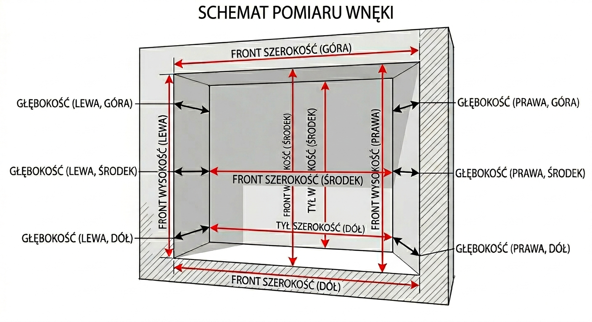

Dokładny pomiar to podstawa — formatki tniemy co do milimetra. Poświęć na to 15 minut, a mebel wejdzie bez docinania. Instrukcja prowadzi krok po kroku, a na końcu znajdziesz kartę pomiarów do wydrukowania i wypełnienia.
1Przygotowanie
Narzędzia
Miarka zwijana (min. 3 m, sztywna taśma) lub dalmierz laserowy
Poziomica (min. 60 cm)
Ołówek i ta karta pomiarów
Telefon do zdjęć
Druga osoba — przy szerokich i wysokich wnękach
Zanim zaczniesz
Opróżnij wnękę i odsuń wszystko od ścian — mierz „gołe” ściany.
Podłoga musi być docelowa. Jeśli planujesz panele, płytki lub wylewkę — mierz po ich ułożeniu albo doliczy ich grubość.
Zdejmij lub zanotuj listwy przypodłogowe — zabierają 10–20 mm głębokości i szerokości przy podłodze.
Wszystkie wymiary zapisuj w milimetrach (np. 2 384 mm, nie „238 i pół”).
2Schemat pomiaru
Ściany rzadko są idealnie proste, dlatego każdy wymiar mierzymy w kilku miejscach. Do konfiguratora wpisujesz zawsze najmniejszą wartość.

Punkty pomiaru: szerokość (S), wysokość (W), głębokość (G)
Szerokość — 4 pomiary
Przód, góra — tuż pod sufitem, od ściany do ściany
Przód, środek — na wysokości ok. 130 cm
Przód, dół — tuż nad podłogą (nad listwą)
Tył, dół — przy ścianie tylnej
Wysokość — 4 pomiary
Przód, lewa krawędź — od podłogi do sufitu
Przód, środek
Przód, prawa krawędź
Tył, środek — przy ścianie tylnej
Głębokość — 3 pomiary
Górna — pod sufitem, od ściany tylnej do krawędzi wnęki
Środkowa — na ok. 130 cm
Dolna — przy podłodze (nad listwą)
Przekątne — kontrola
Z lewego dolnego narożnika do prawego górnego
Z prawego dolnego do lewego górnego
Różnica powyżej 10 mm oznacza, że wnęka nie jest prostokątna.
3Jak mierzyć poprawnie
Trzymaj miarkę poziomo przy szerokości i pionowo przy wysokości — sprawdź poziomicą. Ukośnie trzymana miarka zawsze pokaże za dużo.
Taśma ma być napięta i prosta, bez łuku. Przy dużych odległościach mierz we dwie osoby.
Przy pomiarze do sufitu dociśnij obudowę miarki do podłogi i odczytaj wartość z doliczeniem długości obudowy (podana na miarce) — albo użyj dalmierza.
Każdy wymiar zmierz dwa razy. Jeśli odczyty różnią się o więcej niż 2 mm, zmierz trzeci raz.
Sprawdź poziomicą pion ścian bocznych i poziom podłogi — zanotuj, jeśli coś odbiega.
Ważne: wpisuj najmniejsze wartości
Do konfiguratora podaj najmniejszą szerokość, najmniejszą wysokość i najmniejszą głębokość. Szczeliny przy ścianach zamaskujemy blendami — ale mebla większego od wnęki nie da się wstawić.
4Przeszkody i nietypowe kształty
Zmierz i zanotuj wszystko, co wystaje ze ścian, sufitu lub podłogi. Każdą przeszkodę opisz trzema wymiarami: szerokość × wysokość × głębokość oraz jej położenie (od której ściany, od podłogi czy od sufitu).
Skośny sufit (poddasze, schody)
Wysokość przy wyższej ścianie
Wysokość przy niższej ścianie
Długość prostego sufitu — odcinek od ściany do miejsca, gdzie zaczyna się skos
W którą stronę opada sufit
Komin, pion, rura, uskok ściany
Przy której ścianie (lewa / prawa)
Czy od podłogi, czy od sufitu
Szerokość, wysokość i głębokość — o ile wystaje ze ściany
Instalacje
Gniazdka, włączniki, wypusty oświetlenia
Zawory, liczniki, odpływy (zabudowa łazienkowa)
Położenie: odległość od podłogi i od najbliższej ściany
Elementy przy wnęce
Ościeżnice drzwi, okna, parapety obok wnęki
Grzejnik, kratki wentylacyjne
Kierunek otwierania drzwi pokoju — czy nie zahaczą o fronty
Krzywe ściany?
Jeśli pomiary jednego wymiaru różnią się o więcej niż 5 mm albo przekątne o więcej niż 10 mm — zaznacz w konfiguratorze pole „Krzywe ściany lub nieregularny kształt wnęki”. Odezwiemy się i ustalimy dalsze kroki.
5Zdjęcia wnęki
Zdjęcia bardzo pomagają nam zweryfikować projekt. Dołącz je w ostatnim kroku konfiguratora.
Całość na wprost — z odległości, tak żeby widać było całą wnękę, sufit i podłogę
Oba boki pod kątem — lewy i prawy narożnik
Każda przeszkoda z bliska — z przyłożoną miarką, żeby było widać wymiar
Robiąc zdjęcia, zapal światło — bez lampy błyskowej na wprost ściany
6Co wpisać do konfiguratora
Pole w konfiguratorze
Co wpisać
Szerokość
Najmniejsza z 4 pomiarów szerokości
Wysokość
Najmniejsza z 4 pomiarów wysokości (przy skosie — wysokość przy wyższej ścianie)
Głębokość
Najmniejsza z 3 pomiarów — to głębokość całego mebla razem z frontem
Skośny sufit
Wysokość niższej krawędzi i długość prostego sufitu
Uskok we wnęce
Ściana, od dołu/góry, szerokość × wysokość × głębokość przeszkody
Krzywe ściany
Zaznacz, gdy różnice przekraczają 5 mm (przekątne: 10 mm)
Pamiętaj, że głębokość użyteczna wnętrza będzie mniejsza o grubość frontu (18–19 mm) albo o system drzwi przesuwnych (ok. 80–100 mm).
7Karta pomiarów
Wydrukuj tę stronę i wypełnij przy wnęce. Wszystkie wymiary w milimetrach.